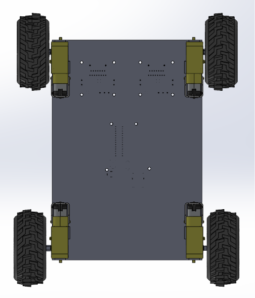
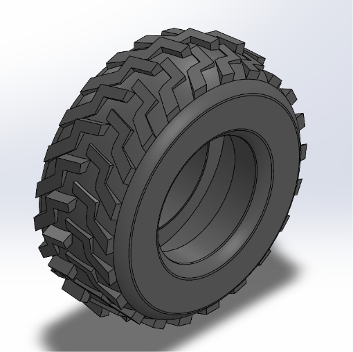
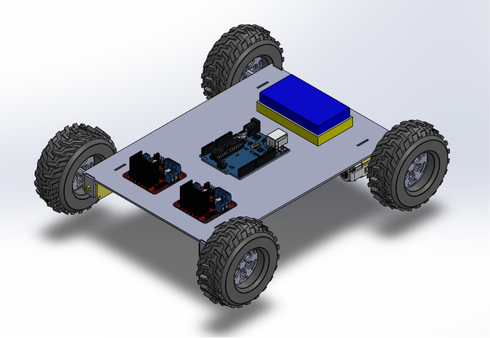
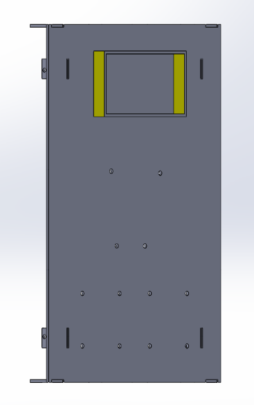
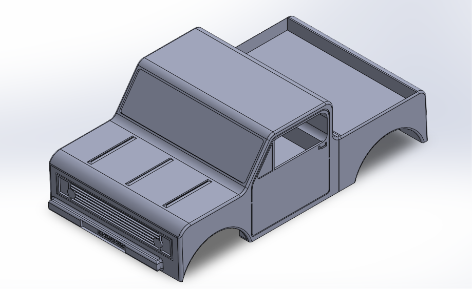

A small 3D printed car controlled by phone through the HC-05 bluetooth module.

One decision I'm happy with is integrating the motor holders directly into the bottom plate, rather than designing them as a separate part to attach later. This reduces the number of individual components and fasteners needed, and keeps the motor mounting more rigid and secure as part of the main structure.





The design is fully modeled in CAD and ready for printing. The next stage is printing the components in their planned materials, assembling the electronics, and testing the base drive and Bluetooth control before adding any additional sensors.